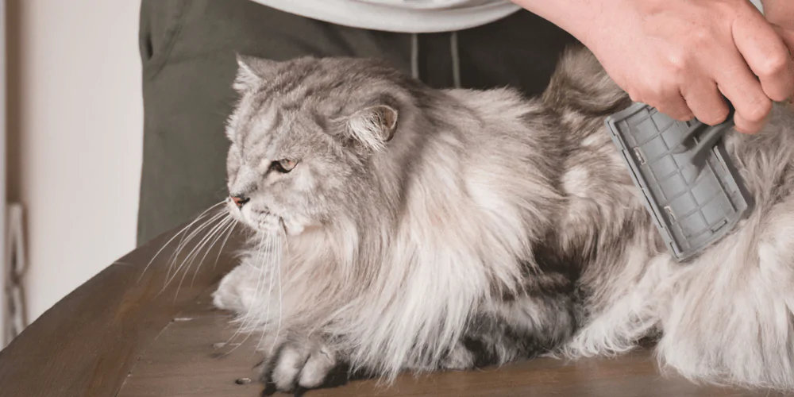

Pet Care Tips

Daily Care Routine
| Task | Frequency | Importance |
|---|---|---|
| Feeding | 2-3 times daily | High |
| Fresh Water | Always available | High |
| Grooming | Weekly | Medium |
| Play Time | Daily | High |
Additional Resources
For more detailed information on pet care, visit the ASPCA Pet Care website.